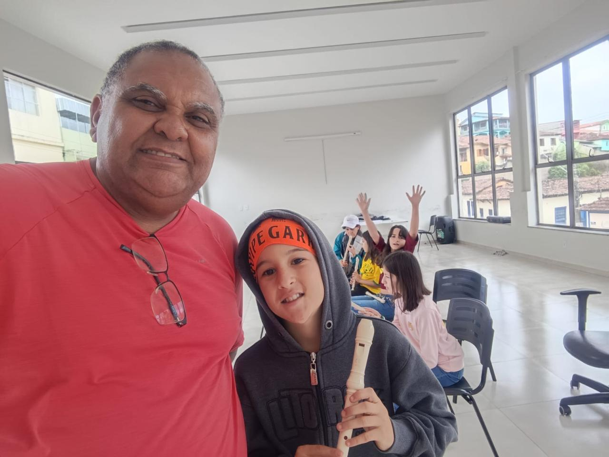

Musicalização
Percepção sonora, ritmo, escuta e expressão musical.
Aprender música hoje. Construir a banda de amanhã.
Quero participar das aulasO projeto Implantação do Polo de Iniciação Musical e Formação Musical de Base para Estruturação Futura da Banda de Música de Bocaina de Minas é uma iniciativa realizada pela Associação Parceiros Nota 10, responsável pela Corporação Musical Visconde de Mauá (COMVIMA), com o objetivo de ampliar o acesso à educação musical e criar as bases para a formação de uma futura banda de música no município.
A proposta oferece atividades de iniciação e formação musical, proporcionando aos participantes o contato com a linguagem musical, o aprendizado progressivo e a experiência de fazer música em grupo.
O projeto também contempla atividades na comunidade de Santo Antônio do Rio Grande, ampliando as oportunidades de formação musical na região.
Implantar e desenvolver a formação musical de base, oferecendo conhecimentos e experiências que contribuam para a preparação de futuros músicos e para a estruturação de uma banda de música em Bocaina de Minas.

Realização: Associação Parceiros Nota 10 — Corporação Musical Visconde de Mauá (COMVIMA).
Investimento: R$ 83.619,98, por meio de emendas parlamentares impositivas municipais, conforme o projeto aprovado.
As atividades são voltadas à construção de uma base musical, respeitando o processo de aprendizagem dos participantes.
Percepção sonora, ritmo, escuta e expressão musical.
Fundamentos da linguagem musical e iniciação à leitura musical.
Primeiros contatos com instrumentos musicais e desenvolvimento gradual das habilidades necessárias para tocá-los.
Exercícios individuais e coletivos para desenvolver coordenação, concentração e execução musical.
Atividades em grupo que estimulam a escuta, a cooperação e a preparação para a prática de banda.
Contato com a tradição das bandas de música e com seu papel na vida cultural das comunidades.
A formação é organizada de maneira progressiva, de acordo com as atividades propostas pela equipe responsável. O objetivo é construir uma base sólida para que os participantes possam avançar no aprendizado musical e, futuramente, integrar uma banda de música.
O projeto contempla atividades em Bocaina de Minas e Santo Antônio do Rio Grande. Confira as informações de cada polo.
Edifício Mário Vani Benfica
Dia: terça-feira
Manhã: 9h às 11h
Tarde: 13h às 15h
Noite: 18h às 20h
Faixa etária prevista: a partir de 9 anos
Salão Comunitário
Dia: quarta-feira
Manhã: 9h às 11h
Tarde: 13h às 15h
Faixa etária prevista: a partir de 9 anos
Entre em contato com a equipe para confirmar a programação vigente, a disponibilidade de vagas e o funcionamento das turmas.
Confirmar horários pelo WhatsAppO projeto é voltado a pessoas interessadas em aprender música e desenvolver habilidades musicais, respeitando os critérios de idade e atendimento de cada localidade.
Público a partir de 9 anos.
Santo Antônio do Rio GrandePúblico a partir de 9 anos.
Não é necessário presumir que o participante já saiba tocar um instrumento. A proposta é oferecer formação musical de base e iniciação, conforme o planejamento pedagógico do projeto.
Quero saber maisQuer participar das aulas de formação musical? Entre em contato para receber orientações sobre vagas e próximos passos.
Informe que deseja participar da Formação Musical de Base.
Informe seu nome, idade, telefone e localidade de preferência.
A equipe informará sobre a disponibilidade de vagas, horários e participação.
O envio do formulário não garante automaticamente uma vaga. A participação depende da disponibilidade de atendimento e da confirmação da equipe responsável.
Precisa de informações sobre as aulas, os horários, a idade mínima ou a disponibilidade de vagas?
Entre em contato com a Associação Parceiros Nota 10 — COMVIMA. Nossa equipe poderá orientar você sobre o atendimento em Bocaina de Minas e Santo Antônio do Rio Grande.
Ao entrar em contato, informe que deseja saber mais sobre a Formação Musical de Base — Bocaina de Minas.
A formação musical é o primeiro passo para desenvolver habilidades, descobrir talentos e fortalecer a cultura local. Com este projeto, a Associação Parceiros Nota 10 e a COMVIMA contribuem para ampliar o acesso à música e criar as bases para uma futura banda de música em Bocaina de Minas, valorizando a participação comunitária e a tradição musical.
COMVIMA — Transformando vidas através da música.